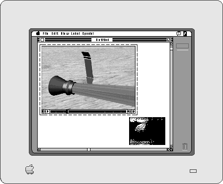

Playing Movies
QuickTime provides a complete set of tools that allow you to play movies in your application. You can also allow the user to position, resize, copy, and paste movies within the documents that your application creates and manipulates.The Movie Toolbox provides functions that enable you to get a movie into your application; you can either get a movie from a file or from the scrap. Positioning the movie within a document varies with the application. For example, in a text document
a movie might be repositioned with tab settings, whereas in a paint document the user might position the movie by selecting and dragging the movie rectangle.Once you have loaded the movie into your document, you can allow the user to play it by calling the movie controller component provided by Apple. Figure 1-2 shows a sample movie controller.
Figure 1-2 A QuickTime movie with Apple's movie controller
Resizing the movie's rectangle is the same as resizing PICT rectangles within a text or paint document. When the user selects the movie, a selection rectangle appears with resizing handles at the corners of the rectangle, like those shown in Figure 1-3. The user can drag the handles to resize the movie rectangle.
Figure 1-3 A QuickTime movie with an active selection rectangle

Changing the size of a movie window may affect the performance of the video during playback as well as its appearance on the display.